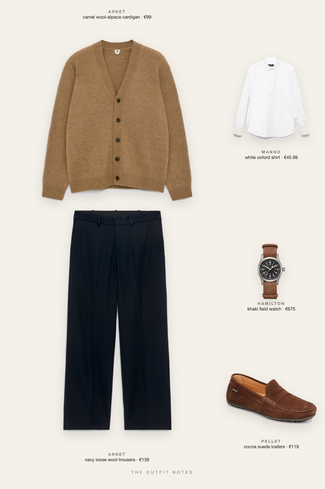
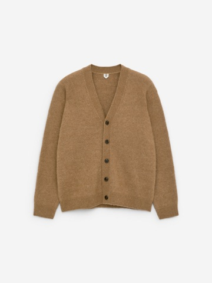
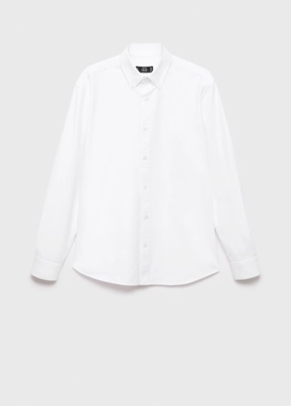
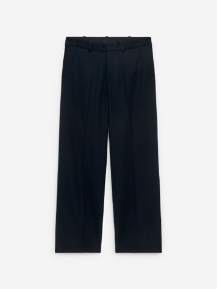
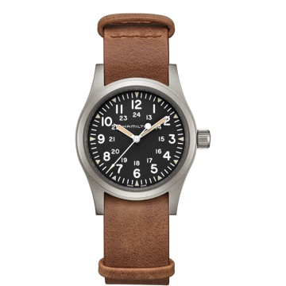

Camel Hour
soft layers for a cold library afternoon

Old money outfit for men this fall: a camel wool-alpaca cardigan from ARKET over a crisp white Mango Oxford shirt, navy loose-fit wool trousers that drape to a slight break, cocoa suede Pellet loafers and a Hamilton Khaki Field watch. A quiet luxury fall outfit men can wear to the office or a Sunday lunch.
The pieces
This page contains affiliate links: if you buy through them, we may earn a commission at no extra cost to you. Disclosure.

ARKET
Camel wool-alpaca cardigan
Shop
Mango
White oxford shirt
Shop
ARKET
Navy loose wool trousers
Shop Pellet
Pellet
Cocoa suede loafers
Shop
Hamilton
Khaki field watch
Shop
Prices are indicative, taken when the look was published, and may have changed. Pictures of the outfit are AI-generated illustrations of real products; the product photos are the retailers' own.
Published 1 October 2026.